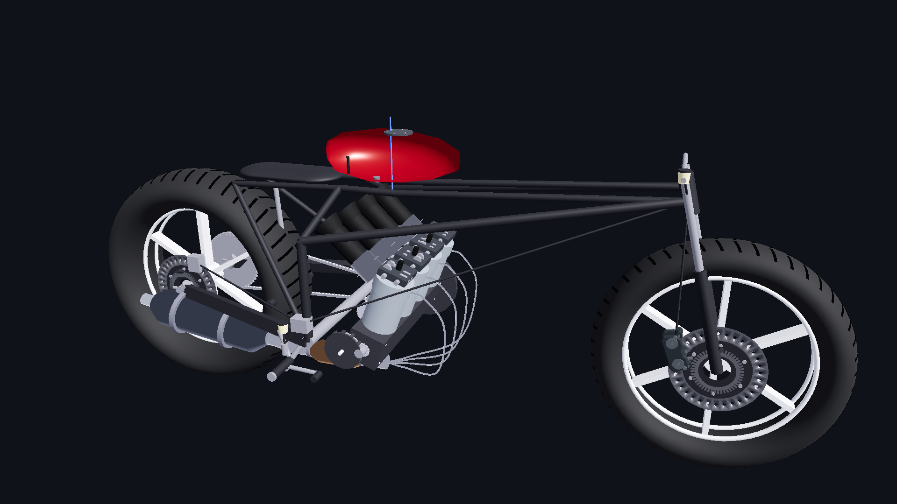

ENGINE BUILDER · v0.1.5
Build a motorcycle engine from its parts, run it on a dyno, change one thing and hear the difference. The power, the pressure waves and the sound all come from the same simulation.

Each cylinder is simulated as a thermodynamic cycle, every step. Nothing is replayed from a recording unless you choose a measured sound profile.
Measure torque and power across the rev range, and compare the curve with a reference dyno sheet. Each result shows how far it sits from the reference, so a claim of accuracy can be checked.
Pipe length, diameter, catalyst and muffler change the pressure waves that become the note.
Valve gear, cams and pistons are drawn as they move, and the drawing is tested for parts that collide.
The game is in development and is not yet released. Here is what is planned and where each platform stands.
Debug builds run on 64-bit ARM phones. Test builds are installed by sideloading an APK file.
Desktop build with an installer. Development builds run from the project folder.
The cylinder follows a combustion cycle with burn timing and heat loss. The exhaust and intake are solved as one-dimensional unsteady gas flow, so pressure waves travel down the pipes at the speed of sound in the hot gas.
Where a value is a measured figure, it is labelled as measured. Where it is an estimate, the simulator says so.